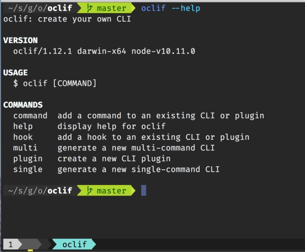
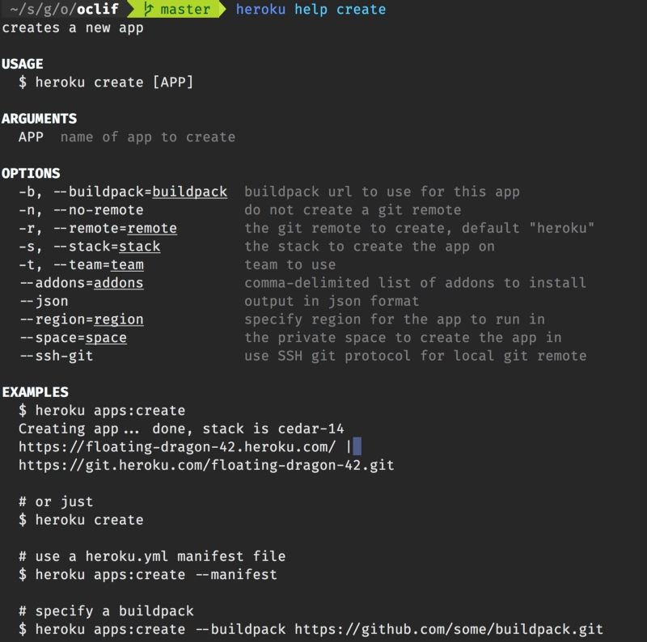
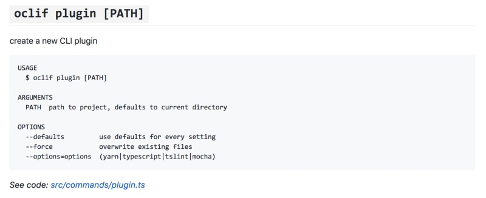
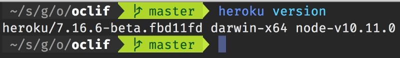
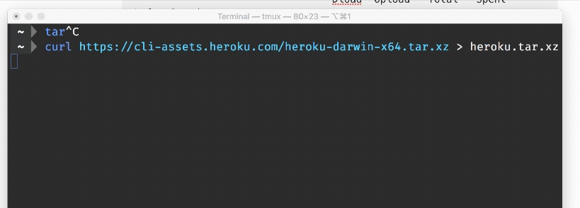
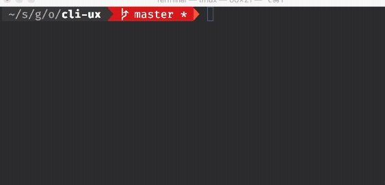
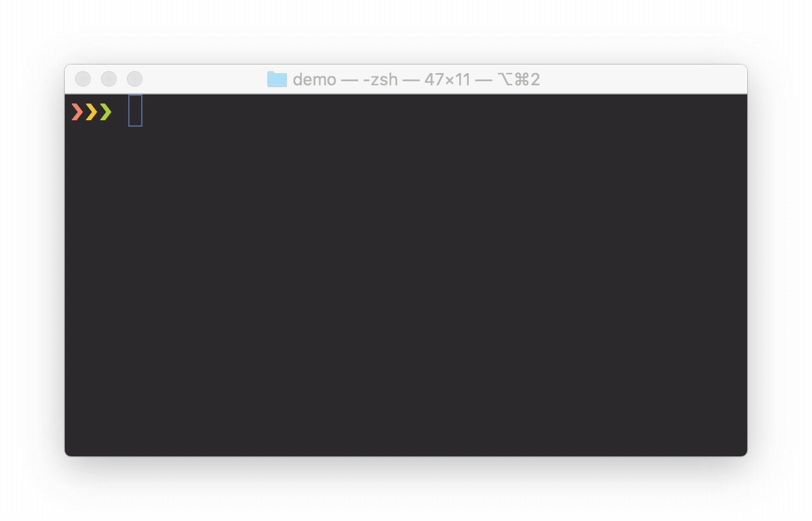
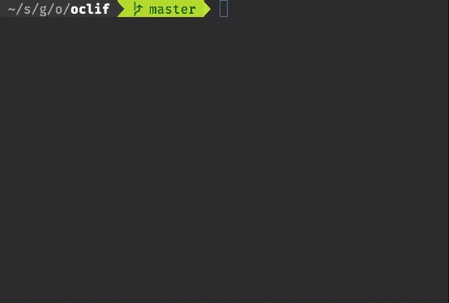
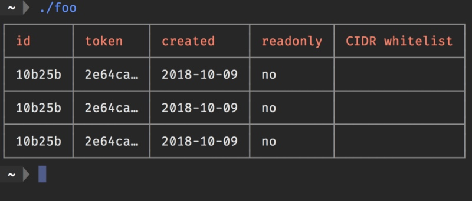
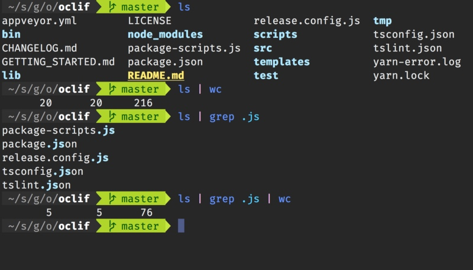

12 Factor CLI Apps
原文地址 https://medium.com/@jdxcode/12-factor-cli-apps-dd3c227a0e46

CLIs are a fantastic way to build products. Unlike web applications, they take a small fraction of the time to build and are much more powerful. With the web, you can do whatever the developer programmed. With CLIs, you can easily mash-up multiple tools together yourself to perform advanced tasks. They require more technical expertise to use, but still work well for admin tasks, power-user tasks, or developer products.
At Heroku, we’ve come up with a methodology called the 12 factor app. It’s a set of principles designed to make great web applications that are easy to maintain. In that spirit, here are 12 CLI factors to keep in mind when building your next CLI application. Following these principles will offer CLI UX that users will love.
We’ve also built a CLI framework called oclif that is designed to follow these principles to build great CLIs in Node.
1. Great help is essential
Having good help documentation for a CLI is extremely important. It’s far more important than when building a web application as you can’t guide the user with a UI.
A CLI should provide in-CLI help and help on the web (READMEs are a great place). That provides the immediate-ness of not needing to leave the terminal while also giving Google the opportunity to help your users (make sure Google is indexing the docs too btw).
Unless you already know your users will want man pages, I wouldn’t bother also outputting them as they just aren’t used often enough anymore. Novice developers are unaware of them and they don’t work on Windows. Offline support isn’t necessary if you already have in-CLI help. Still, man page support is coming to oclif because in a framework I think it makes sense. It can be solved once for all oclif CLIs to reap the benefits.
In the CLI, make sure all of the following displays the help. You can’t control what the user inputs so all of these must show help.
# list all commands $ mycli $ mycli --help $ mycli help $ mycli -h
# get help for subcommand $ mycli subcommand --help $ mycli subcommand -h
-h,--help should be a reserved flag used for help only. In the case of $ mycli subcommand help. You can’t guarantee that help isn’t an argument that should be passed to the subcommand. In that case, it’s better to only show the help if it would otherwise error out with an invalid argument error. There is actually a Heroku app named “help” which has caused this problem for me before.
Shell completion is another great way to offer help to the users.
In terms of the help itself, show a description of the command, description of the arguments, description of all the flags, and most importantly: provide examples of common usage of the CLI. Even if the usage is obvious to you, it’s by far the most common referenced bit of documentation users will find.

Of course, by building a CLI with oclif you get all this for free. Online docs, in-CLI docs, and autocomplete. We’re even working on a linter to help you enforce descriptions everywhere.

Example oclif readme auto-documentation
2. Prefer flags to args
A CLI can accept 2 types of shell inputs: flags and args. Flags require a bit more typing, but make the CLI much clearer. For example, in the Heroku CLI we used to have a command called heroku fork. It took in a source app to copy from and a destination app to copy to. Initially, this used a flag and an argument like this:
$ heroku fork FROMAPP --app TOAPP
Using a flag and an arg, it was really confusing which was the source and which was the destination app. We changed this to use flags for both:
$ heroku fork --from FROMAPP --to TOAPP
This way it’s clear which is the source and which is the destination.
Note that we actually removed this command from the Heroku CLI but it’s still a great example of how args can be confusing.
Sometimes args are just fine though when the argument is obvious such as $ rm file_to_remove. A good rule of thumb is 1 type of argument is fine, 2 types are very suspect, and 3 are never good.
For variable length arguments, it’s fine to have multiple arguments. (For example, $ rm file1 file2 file3). It’s just when they’re different types that it becomes confusing to the user.
Flags are also much easier to write autocomplete logic for as you know exactly what the value should be.
For CLIs that pass flags off to some other process (such as heroku run), the flag parser should accept a -- argument to denote that it should stop parsing and simply pass everything down as an argument. This allows you to run a command like heroku run -a myapp -- myscript.sh -a arg1 (This shows how -a can be a flag for heroku run but also a different -a is passed to the dyno).
3. What version am I on?
Ensure you can get the CLI version through any of the following:
$ mycli version # multi only $ mycli --version $ mycli -V
Unless it’s a single-command CLI that also has a -v,--verbose flag, $ mycli -v should also just display the CLI version. It’s frustrating to run 3 different commands to get the version for a CLI until you find the right one.
The version command is a main place you’ll ask users for debugging information so it’s a good place to add any helpful extra information aside from just the version number that might help you diagnose issues.
I also suggest sending the version string as the User-Agent so you can debug server-side issues. (Assuming your CLI uses an API of some sort)

4. Mind the streams
Stdout and stderr provide a way for you to output messages to the user while also allowing them to redirect content to a file. For example:
$ myapp > foo.txtWarning: something went wrong
Because this warning is on stderr, it doesn’t end up in the file. Putting the warning on stdout would not only hide the warning here, but it would be especially problematic for structured data like JSON or binary. Use stderr for errors and warnings which by default will always end up on the screen even if stdout is redirected.
Not everything on stderr is an error though. For example, you can use curl to download a file but the progress output is on stderr. This allows you to redirect the stdout while still seeing the progress.

In short: stdout is for output, stderr is for messaging.
If you run a subcommand in your CLI, make sure you pipe the stderr of that subcommand up to the user always. This way any issues are surfaced ultimately to the user’s screen.
5. Handle things going wrong
Things go wrong in CLIs much more often than in web apps. Without a UI to guide the user, the only thing we can do is display an error to the user. This is expected behavior and part of using any CLI.
First and foremost, make your errors informative. A great error message should contain the following:
- Error code
- Error title
- Error description (Optional)
- How to fix the error
- URL for more information
For example, if our CLI errored out with a file permission issue, we could show the following:
$ myapp dump -o myfile.out Error: EPERM - Invalid permissions on myfile.out Cannot write to myfile.out, file does not have write permissions. Fix with: chmod +w myfile.out https://github.com/jdxcode/myapp
Just think if every CLI was this helpful how incredible it would be to be a programmer.
Sometimes though you will have unhandled errors you didn’t expect the user to run into. For that, have a way to view full traceback information as well as full debug output with environment variables.
In oclif we use the debug module which allows us to output debug statements grouped by component if the DEBUG environment variable is set. We have a lot of verbose logging if debug is fully enabled which is incredibly valuable to us when debugging issues.
Error logs can also be useful for post-mortem debugging but ensure they have timestamps, truncate them occasionally so they don’t eat up space on disk, and make sure they don’t contain ansi color codes.
6. Be fancy!

Modern CLIs shouldn’t be afraid to show off. Use colors/dimming to highlight important information. Use spinners and progress bars to show long-running tasks to tell the user you’re still working. Leverage OS notifications when a very long-running task is done.
Still, you need to be able to fall back and know when to fall back to more basic behavior. If the user’s stdout isn’t connected to a tty (usually this means they’re piping to a file), then don’t display colors on stdout. (likewise with stderr)
Spinners and progress bars are also not a good idea when it’s not a tty. These work by outputting ansi codes to overwrite which only works on a screen. You never want to output those codes to a file.
The user may have reasons for just not wanting this fancy output. Respect this if TERM=dumb, NO_COLOR is set, or if they specify --no-color. I would also suggest adding in an app-specific MYAPP_NOCOLOR=1 environment variable as well in case they want to disable color on just your CLI.
7. Prompt if you can
For accepting input, if stdin is a tty then prompt rather than forcing the user to specify a flag. Never require a prompt though. The user needs to be able to automate your CLI in a script so allow them to override prompts always.

Prompt example
Another great place to add prompts is confirmation dialogs for dangerous actions. For example when destroying a Heroku app, you’ll need to type the app name again to confirm:
Checkboxes and radio buttons are a great way to improve CLI UX when you want to present options to the user visually:

transferring multiple apps to a new user with the Heroku CLI
8. Use tables
Note that _cli.table()_ from _cli-ux@5_ allows you to easily create tables following these principles.
Tables are a very common way to output data in a CLI. It’s important that each row of your output is a single ‘entry’ of data. Never output table borders. It’s noisy and a huge pain for parsing. This is an example of what not to do:

By keeping each row to a single entry, you can do things like pipe to wc to get the count of lines, or grep to filter each line:

listing files, piping to wc to count number of files, then doing the same of files with “.js” in the name. Note that wc has 3 counts: lines, words, and characters. You may also notice ls follows factor #6 where it behaves differently when piped vs when it is outputting to the screen (tty).
Be mindful of the screen width. Only show a few columns by default but allow the user to pass --columns with a comma-separated list of column names to add less common types.
Truncate rows that are going to spill over the current screen width unless --no-truncate is set.
Show column headers by default but allow them to be hidden with --no-headers.
Allow users to pass --filter to filter specific columns. (grep can usually do this, but a flag can filter on specific cell values)
Allow sorting by column with --sort. Allow inverse and multi-column sort as well.
Allow output in csv or json. Displaying raw output as json is a great way to output structured data. It can be manipulated with jq. While jq is incredibly useful, cut and awk are simpler tools that work better with csv data.
9. Be speedy
CLIs need to start quickly. Use $ time mycli to benchmark your CLI. Here is a rough guide:
- <100ms: very fast (sadly, not feasible for scripting languages)
- 100ms–500ms: fast enough, aim here
- 500ms-2s: usable, but not going to impress anyone
- 2s+: languid, users will prefer to avoid your CLI at this point
Obviously if your CLI is performing a major task like downloading a large file or something heavily CPU-bound it won’t perform as quickly. In that case, make sure to show a progress bar or at least a spinner. Even just a spinner will give the impression the CLI is much faster than it is.
oclif is designed to have minimal overhead. Right now on my box it sits around 150ms which is about as good as node can get. It doesn’t need to require all the js files in your CLI, just the command that is about to run. So even if you have hundreds of commands, the overhead will still be 150ms.
10. Encourage contributions
Keep your code open source. This allows users to poke around and diagnose problems themselves. It’s healthy to the community to offer a sample in case it’s useful to others. It makes organizations look great as well.
Make sure you pick a license of course. GitHub and GitLab are great places to put your CLI and the README gives you a perfect place to provide an overview of the CLI.
Write up how to run the CLI locally and run the test suites. Offer a contribution guideline doc to tell contributors what you expect in terms of commit syntax, code quality, tests, or whatever else is important for them to know.
Add a code of conduct. Even if you don’t feel that it’s necessary. It’s important to some people and they’ll feel much better by seeing one. To others they probably won’t even notice it. It’ll be helpful in the event someone is being rude and you have a document to point to.
In oclif, the plugins system offers a great way for people to extend your CLI. These plugins can later be included as a core plugin to provide functionality to all users.
11. Be clear about subcommands
There are 2 types of CLIs: single and multi-command. Single-command CLIs are basic UNIX-style CLIs like cp or grep. Multi-commands are more like git or npm which accept a subcommand as the first argument.
If a CLI is simple and only performs one basic task, it’s good fit for a single-command CLI. Most CLIs, however, will probably benefit from using subcommands.
Either way, if the user doesn’t pass anything arguments to the CLI, it’s always better to list the subcommands (for multi) or display the help (for single) rather than do some default behavior. Usually the user will do this before doing anything else.
When you start using subcommands, it doesn’t take long before sub-subcommands become useful (we call these “topics” in oclif). Git chooses to separate subcommands from topics with spaces:
$ git submodule add git@github.com:oclif/command
Where in the Heroku CLI we use colons:
$ heroku domains:add www.myapp.com
Colons are preferable to help delineate the command between the arguments passed to the command. The user quickly learns that argument 1 is the command and how to get help for it.
Getting into the weeds a little bit, there is another technical reason why we prefer colons. For topic-level commands like _$ heroku domains_ we list all the domains of an app. If we used spaces to separate commands from subcommands _and_ wanted this topic-level command to accept an argument, the parser could have no way to determine if the argument was a subcommand or argument to the topic command. Therefore, using spaces to separate makes it so you cannot have topic-commands also accept an argument.
12. Follow XDG-spec
XDG-spec is a great standard that should be used to find out where to put files. Unless environment variables like XDG_CONFIG_HOME say otherwise, use ~/.config/myapp for config files, and ~/.local/share/myapp for data files.
For cache files though, use ~/.cache/myapp on Unix but on MacOS it’s better to default to ~/Library/Caches/myapp. On Windows you can use %LOCALAPPDATA%\myapp.
_If you happen to be at Node+JS Interactive this week, I’ll be giving a talk on this topic._
* 
### [Jeff Dickey](https://medium.com/@jdxcode "Go to the profile of Jeff Dickey")
CLI Engineer at Heroku
</footer>
Copyright © 2015 Powered by MWeb, Theme used GitHub CSS.